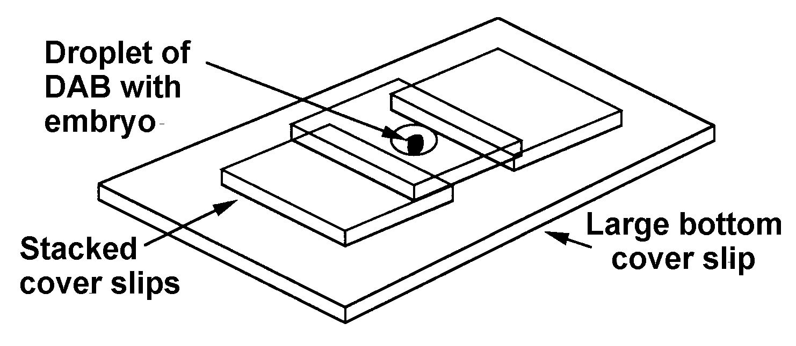
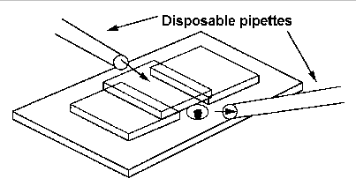

A TRANSGENE CONTAINING LacZ IS EXPRESSED IN PRIMARY SENSORY NEURONS
IN ZEBRAFISH
PREPARATION OF HIGH MOLECULAR WEIGHT GENOMIC DNA FROM ZEBRAFISH
PHOTOCONVERSION OF FLUORESCENTLY LABELLED PROFILES FOR EM
FUNCTIONAL TEST OF THE EPENDYMIN PROMOTER BY TRANSIENT EXPRESSION
IN ZEBRAFISH EMBRYOS
A ZEBRAFISH NOTCH HOMOLOG IS EXPRESSED DURING EMBRYOGENESIS
RAISING ZEBRAFISH BABIES SAFELY AND EASILY
By Thomas A Bayer & José A. Campos-Ortega, Institut für Entwicklungsbiologie (University of
Cologne). In press, Development.
To screen for developmentally active chromosomal domains during early zebrafish embryogenesis, we generated transgenic fish by microinjecting a lacZ reporter construct. To screen for transgenic fish, we crossed injected fish (Fo) to non-injected fish. Groups of 15 to 20 progeny of each cross were tested for transmission of injected sequences using PCR. Injections of a linear reporter construct containing mouse heat shock promoter sequences revealed transmission of injected sequences to F1 progeny in about 6% of the cases (8 of 129 fish).
We found one lacZ-expressing line that showed a spatially and temporally restricted expression pattern of lacZ and, therefore, displays characteristics typical of "enhancer trap" lines. The reporter gene, lacZ, is expressed exclusively in primary sensory neurons, including Rohon-Beard neurons in the spinal cord and trigeminal ganglion neurons in the head. LacZ expression starts at 16 h (hours post-fertilization) in trigeminal ganglion cells. At about 24 h lacZ expression can be detected in trigeminal ganglion neurons and Rohon-Beard neurons. The reporter gene has integrated as a single copy. The founder fish was mosaic: 19% of its offspring (3 of 16 tested animals) carried the reporter construct in their fins; about 51% (13 of 27 tested animals) of the progeny of F1 fish were -Gal positive indicating full hemizygosity. We traced the inheritability up to the 4th generation and showed that the reporter construct is stably integrated and inherited in a Mendelian manner. These results demonstrate that it is possible to generate "enhancer trap" lines in zebrafish, albeit with low efficiency.
Our future research interests will focus on cloning the insertion site and generating mutants using lacZ as a dominant marker in a deletion mutagenesis screen. To that aim, we already irradiated several thousand homozygous embryos. The survivors will be tested for the lack of lacZexpression.
******************************************************************************
By Marie-Andrée Akimenko, Institute of Neuroscience, University of Oregon, Eugene, OR,
97403. Modified from Blin and Stanford Nucl. Acids Res. 3, 2303-2308 (1976).
1. Grind frozen adult zebrafish to fine powder in liquid nitrogen.
2. Suspend in 10 ml of digestion buffer: 10mM Tris-HCl pH 8.0. 1% SDS, 5mM EDTA, 100 µg/ml of proteinase K.
3. Digest at 37C for 5 hours with shaking.
4. Extract solution once with an equal volume of phenol followed by two extractions with an equal volume of phenol : chloroform : iso-amyl alcohol (50:48:2).
5. Adjust the NaCl concentration of the aqueous phase to 0.3 M NaCl and precipitate with 2.5 volumes of ethanol. Mix by inversion and centrifuge immediately for 10 minutes at 3000 x g. Rinse pellet with 70% ethanol and dry.
6. Resuspend the pellet in 1 ml of 10 mM Tris-HCl pH 8.0, 1 mM EDTA. Add NaCl to a final concentration of 100 mM and incubate with 100 µg/ml of deoxyribonuclease-free ribonuclease A at 37C for 3 h.
7. Add SDS to a final concentration of 0.2% and extract the solution twice with an equal volume of phenol : chloroform : iso-amyl alcohol (50:48:2) followed by precipitation with ethanol as in step 5.
8. Resuspend the DNA pellet in 1 ml of 10 mM Tris-HCl pH 8.0, 1 mM EDTA.
******************************************************************************
By Steve Wilson, Division of Biomedical Sciences, Kings College London, Strand, London
WC2B 5RL.
In recent years, lipophilic neuroanatomical tracer dyes, such as diI (Molecular Probes), have gained favor for many neuroanatomical applications (Honig and Hume, TINS 12, 333). One major advantage is that they can be used on fixed tissue allowing much more accurate applications of tracer than is often possible in living animals. A disadvantage to these lipophilic dyes is that they are fluorescent, making it more difficult to accurately examine labeled profiles in relation to their environments. This problem was overcome when it was found that the fluorescence within labeled profiles could be converted to a permanent brown reaction product by excitation of the labeled profile in the presence of diamino benzidine (DAB, McConnel et al. Science 245, 978).
Recently we, and others, wondered if this photoconverted reaction product would be suitable for ultrastructural examination. Indeed it is, and given the right conditions, one can obtain EM pictures as nice as intracellular fills with HRP. Below are the methods that we use to get the best EM preservation. Nothing in these methods is particularly novel but there are a few helpful hints for getting the best results.
1. Fixation. 2-4 hours in 0.1M Pipes (disodium salt) buffer, 2mM EGTA, 1mM MgSO4 and 3.5% paraformaldehyde (or formalin). Adjust pH to 6.95 with concentrated HCl. To this solution add a few drops of glutaraldehyde to give a final concentration of about 0.1% (this last step can be omitted if the preparation is not destined for EM).
Although this is an unusual preliminary fix for EM, especially since it contains EGTA, it works quite well. I expect that PO4 buffered fix would also work, although I use the above primarily because it seems easier to dissect embryos fixed in Pipes than in PO4.
2. Wash in 0.1M PO4 buffer (pH7.4) and dissect as much as possible to expose the cells that you want to label.
3. Dissolve diI in dimethyl formamide (DMF) or some other organic solvent and allow to dry on glass.
4. Using a sharp tungsten needle, pick up some of the diI crystals (they stick easily to the needle). Put this needle into the bathing solution close to your embryo and using a second needle, pick off a crystal (I use ones between 5-40, um). The diI is neutrally buoyant and will float in the buffer around your embryo. Using the second needle, move the crystal onto the cell(s) of interest. The diI sticks when it touches tissues, so it requires a bit of practice to position it without error. Leave the crystal in place for several minutes before moving the embryo (with care the crystal can be removed after the diI has labeled your cells).
I think that there are a few advantages to using a crystal over injecting liquid diI. First, it causes less damage and secondly the DMF in which diI is dissolved is probably bad for EM preservation. Obviously you cannot use a crystal if your cells of interest are not superficial.
5. Allow the diI to label your cells. For EM, I have labeled growth cones that were 150 µm from the application sites in about 4 hours at room temperature. The time will depend upon the duration of fixation and the distance that the diI has to diffuse.
The object of steps 1-5 is to get the cells as brightly fluorescent in as short a time as possible. Others have obtained good results using intracellular tracers, such as lucifer yellow, and diffusion in living tissue also works (Simon and O'Leary, Devel. Biol. 137, 125).
6. Make a slide with a well that can
hold the embryo and can be
coverslipped. An adequate supply
of DAB (which is a carcinogen) is
necessary, so this requires some inventive slide making to keep DAB on the tissue and off the
microscope. I use a 64 x 48 mm coverslip onto which two pillars of two or three 22x22mm
cover slips have been glued to form a well which sits between the columns.

7. Put the embryo and a drop of DAB (30 mg in 50 ml of PO4) into the well and place a coverslip on top. This cover slip is held by surface tension and the whole slide can be turned upside down without spilling DAB to allow viewing of the embryo from either side. Moving the top coverslip gently allows the tissue to be rotated.
8. Illuminate the labeled cells in the DAB solution with a compound microscope using the normal filters for exciting and viewing diI. The fluorescence fades after a few minutes and a brown reaction product appears. As soon as this happens, remove the specimen by adding a drop of buffer to one side of the well, wash it well, and fix it in 3% glutaraldehyde (buffered to pH 7.2) for 2-3 hours. Do not photoconvert the profiles too long as this leads to spreading of the reaction product beyond the labeled cell and gives poor EM. The reaction product also intensifies when it is osmicated so even if you can barely see the profiles at the light microscope, you should have no problem finding them with EM.
This photoconversion is the make or break step. Two problems tend to arise.
a) Nothing photoconverts. Try the following. Label the cells as brightly as possible, make sure no extra filters are in the light path, use a strong fluorescence light source and use as high a magnification (and numerical aperture) as possible. Allow a longer transport time so that the profiles get as bright as possible. Try using fresh DAB and increasing the concentration to 50mg/50ml. Increase the time allowed for photoconversion. You also want your tissue to be as superficial as possible - removing skin and muscle etc. helps. b) Everything photoconverts and the background is high. Make sure that the DAB is freshly dissolved (or at least not too old). DAB frozen as a concentrated solution eventually seems to lose its potency. Try lowering the concentration of DAB. Try lowering background fluorescence by keeping the application site out of the field of view, and removing the condenser lens (which reflects epi-fluorescence).
7. Photograph and draw the preparation, then osmicate it (1% for one hour). After that, use a standard EM protocol to get the preparation into plastic (Wilson et al. Development 108, 121). Under a good stereomicroscope you will be able to see the photoconverted cells in the embryo even after it has been embedded in plastic. This helps considerably when you try to find the profiles during sectioning. Initially, I look for the reaction product in unstained 1 µm sections because it is easy to pick out against the transparent background.
******************************************************************************
By Thomas A. Bayer1, Heinz Rinder2, and Werner Hoffmann2; 1Institut für Entwicklungsbiologie (University of Cologne) and 2Max-Planck-Institut für Psychiatrie (Martinsried), FRG.
In press, DNA Cell Biol.Testing cloned promoter regions for their functionality under in vivoconditions is a non-trivial task. Thus, regulatory regions are normally investigated with in vitrosystems, for example, for their responsiveness to various factors. However, information concerning the temporal and spatial expression pattern within an organism cannot be obtained by these assays and this normally needs very elaborate generation of transgenic animals.
Ependymins are synthesized in fibroblasts of the (endo)meninx and these glycoproteins probably exist in two different forms: as soluble proteins predominant in the cerebrospinal fluid of many teleost fish and as constituents of the extracellular matrix. Recently, we made the first successful attempt to test a cloned 2.0 kb upstream region of the zebrafish ependymin gene for its capacity to direct transient expression of a reporter gene (lacZ). After injection of this ependymin-promoter-lacZ gene fusion into recently fertilized zebrafish eggs, this regulatory region was sufficient to direct the ependymin-specific
temporal and spatial expression pattern of the lacZ gene and we observed -gal-actosidase positive cells exclusively in the meninx starting between day 2 and day 3 post-fertilization. These results are in full agreement with the developmental profile of ependymins and previous in situhybridization studies.
For the future, we hope that this assay, which is technically feasible on a routine basis, will be suitable for other genes. Please contact T.A.B. for technical questions of the transient assay and W.H for further information on ependymins.
******************************************************************************
By Christiane Bierkamp & Jose A. Campos-Ortega, Institut für Entwicklungsbiologie, University of Cologne.
We have cloned the Notch homolog in zebrafish. It encodes a putative transmembrane protein of 2408 amino acids with remarkable similarity in both its extracellular and intracellular domains to the Xenopus, Drosophila, and mammalian homologs. Sequence analysis reveals the presence and the consistent order of the typical functional Notch motifs, such as 36 EGF like repeats, 3 LIN-12/Notch repeats, 6 cdc10/SWI6 repeats and OPA repeats. The 8.5 kb transcript is expressed during embryogenesis. (In preparation).
******************************************************************************
By Wolfgang Driever and Colleen Boggs; Cardiovascular Research Center, MGH East 4, 13th
Street Building 149, Charleston MA 02129
One of the major problems that we face is how to raise baby fish fast, safely, and easily. To this end, we have developed or adapted methods and devices to reduce the labor necessary to grow babies. First we will discuss protocols for food preparation, and then we will offer some tips and hints for feeding fish.
1. Prepare the solution of primary components. Make sure the dry ingredients are well mixed
before adding them with stirring to the water or the ribonucleic acid and the phosphatidylcholine
will lump together and not dissolve. This solution can be heated slightly to help dissolve small
lumps. Then add Stock Solutions I and II.
(Store at -20C; the riboflavin is dispersed throughout the solution and will settle to the bottom.
Shake well before using)
(Note: Blow nitrogen gas over the solution and store at -20C)
2. Adjust the pH of the medium to 7.2 at room temperature.
3. Autoclave for 15 minutes in 500 ml aliquots (Some coagulation may occur, which is ok, but if too much of the milk precipitates, the paramecia will not grow).
4. Test whether the medium is sterile and store in a refrigerator for up to several months.
Culture of Paramecia:
1. Grow paramecia cultures under "cell culture" conditions. Make passages in a sterile tissue culture hood.
2. Use 500 ml or 1000 ml media bottles (e.g., with orange caps) and culture at 28C in the dark, for example in a cabinet in your fish room.
3. Dilute the starter culture (a clear suspension of paramecia) 1:1 with fresh (milky) medium and incubate with the cap loosened one half turn to provide air. After 2-3 days the culture will clear and you should be able to observe clouds of paramecia.
4. Expand the culture by diluting it 1:1 with fresh medium. If you add twice the volume of fresh medium, it takes about 3 days to clear. Use clear cultures for harvesting paramecia or store for 3 to 5 days at about 20C.
Long term storage of paramecia:
Use Dryl's solution (1 volume clear culture to 5 volumes Dryl's) to prepare a backup stock in case the original culture becomes contaminated. Paramecia live about 10 days in this solution in the dark at 18-20C. Prepare the solution from autoclaved components and add the CaCl2 last or it will precipitate.
Long term paramecia storage medium:
1. Choose bottles of cleared paramecia cultures for harvest. Approximately 40-50 ml of culture will feed up to 100 larval fish per day.
2. Place the funnel in a flask and filter the paramecia stock through the folded cotton handkerchief to remove precipitates of the Schönefeld's medium.
3. Filter the liquid through fluted circles until the flow decreases to a slow drip.
4. Rinse the paramecia off the filter paper into a flask using embryo medium (recipe in the Zebrafish Book). Repeat until all the stock is filtered.
5. Refilter the paramecia through fluted circles rinsing with embryo medium until most of the yellow color has disappeared.
6. Collect the paramecia in a clean bottle making sure that the yellow color is gone. Rinse again if necessary. Some paramecia pass through the fluted filters. If they are needed for feeding, they can be collected by filtering through the Whatman No. 1 circular filter. However, filtering through a Whatman 1 is very slow.
7. Adjust the volume with embryo medium to equal ½ of the original culture volume. Store in darkness at 20C until needed for feeding.
2. On day 5, transfer larvae into 1000 ml beakers (up to 100 larvae per beaker). Fill the beakers with about 200 ml
of embryo medium. Feed 5 ml of the paramecium suspension (see above) three times daily on day 5 and 6, then 10 ml three times daily thereafter.
3. On day 9 or 10, when the larvae have nice "paramecium bellies", transfer them into "baby-tubes". Pour the larvae from a 1 l beaker into each babytube. At this age, their belly is big enough so that they will not pass through the mesh.
4. Exchange the water and aerate with a Pasteur pipette in the baby-tube attached to an air line. One or two air bubbles every second is sufficient because more air will move the water too much and the fish will have to fight the current.
5. Feed 5-10 ml (for 20-100 larvae) of paramecium suspension 3 times per day.
6. Every second day, change the water with an aspirator, remove dead fish from the baby-tube, and add about 200 ml of embryo medium.
7. Beginning on day 15 to 20, feed the fish with brine shrimp three times a day. Be sure to remove dead brine shrimp daily.
8. When about 90% of the fish eat brine, transfer the baby-tubes into fish tanks (see Figure).
9. Continue feeding the fish 3 times each day for 5 to 10 days with the small size brine shrimp. In addition feed them each evening with about 10 ml of Spirulina (1 teaspoon of Spirulina slurry per 200 ml of fish water; Spirulina from Argent Laboratories). It is unnecessary to clean the tubes as long as the water flow is adequate. Fish can stay in these tubes until they are about 4-6 weeks old and are large enough to go into regular tanks.
We have now raised about 100 lines (a total of about 7000 fish) using this schedule. Survival of wild types was between 70 and 95% of hatched larvae, and for mutagenized stocks between 60 and 90%. The fish reached sexual maturity before three months of age (at 3 month, 50-80% of all crosses within a given stock produced eggs). Raising fewer fish (20) in a beaker does not increase survival significantly, but we could obtain sexually mature fish as early as 9-10 weeks.
******************************************************************************